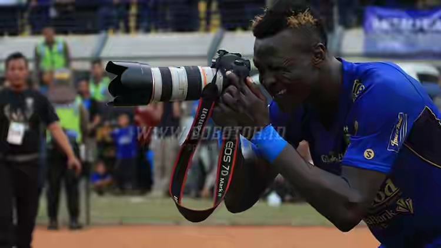

Ezechiel N'Douassel
Persib Bandung terancam tidak bisa menurunkan striker andalannya Ezechiel N'Douassel dalam menghadapi Barito Putera di laga lanjutan Gojek Traveloka Liga 1 2017 yang akan digelar di Stadion Si Jalak Harupat Kabupaten Bandung, Senin (9/10/2017). Pasalnya striker asal Chad itu mengalami cedera.Alhasil, pemilik nomor punggung 70 ini menjalani sesi latihan di Lapangan Lodaya Bandung, Rabu (4/10/2017) secara terpisah. Dokter tim Persib Bandung, M Rafi Ghani membenarkan bahwa Ezechiel mengalami sedikit kendala di bagian engkel kiri sehingga harus menjalani sesi latihan secara terpisah.
Balikpapan di Stadion Batakan Balikpapan, Minggu (1/10/2017) lalu."Selesai pertandingan terakhir gak ada apa-apa. Tapi katanya terasa setelah bangun tidur. Ada rasa nyeri di mata kaki luar kaki kirinya. Dan dia baru ingat saat pertandingan diganjal oleh pemain lawan," katanya.Namun Rafi memastikan bahwa cedera yang dialami Ezechiel tidak tergolong serius. "Mudah-mudahan bisa segera pulih dan bisa dimainkan saat lawan Barito nanti," harapnya.Sebelumnya Persib Bandung sendiri dipastikan tidak bisa diperkuat dua pemain andalannya Achmad Jufriyanto dan Febri Hariyadi saat melawan Barito Putera. Alasannya karena keduanya terkena hukuman akumulasi kartu.